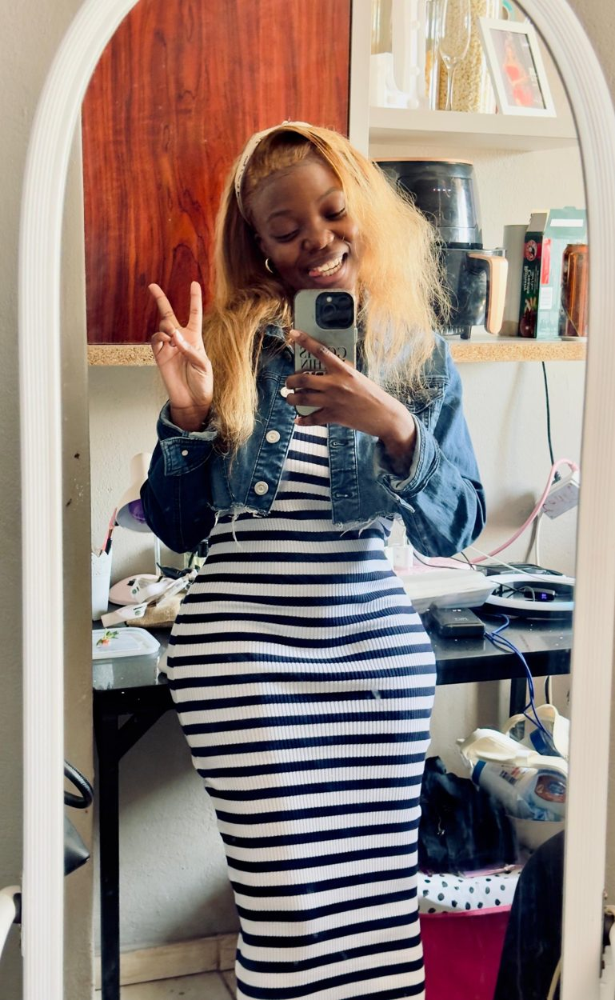
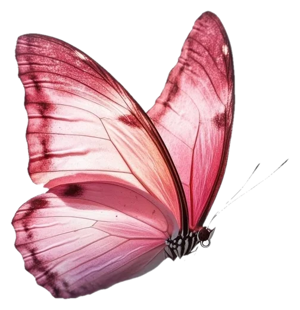

Hair is the most personal accessory you will ever wear. I create styles that make women feel unmistakably themselves: confident, polished and a little bit magical.
Book with Shachah

Every parting, every braid and every curl is planned around your face, your lifestyle and your hair. No two styles leave my chair the same.
Clean lines, comfortable tension and a finish you will want to photograph. Beauty is in the small things done slowly and well.
A calm, private studio, honest advice and a chair that is yours for the appointment. You leave feeling cared for.
Wear your hair like it's art.Reserve your look